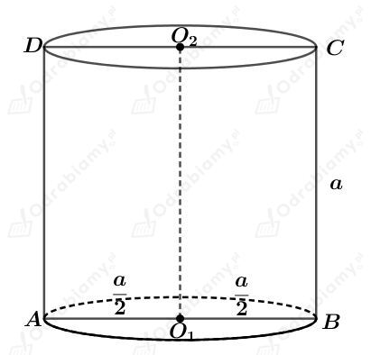
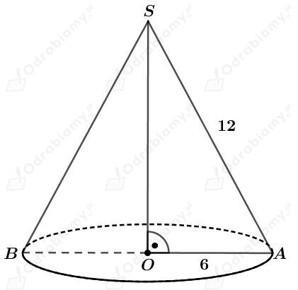
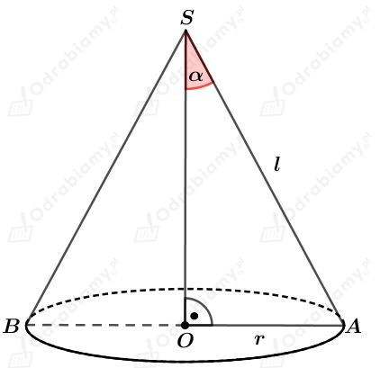
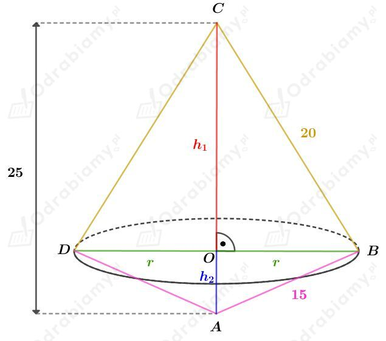
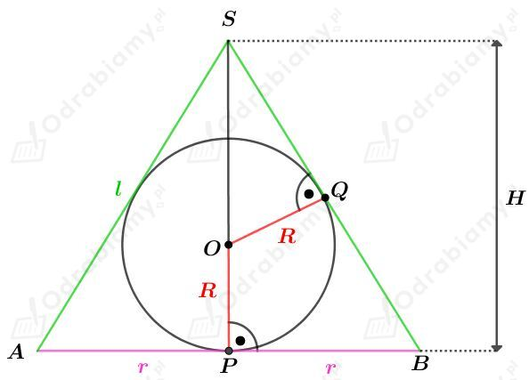

Dany jest prostokąt o bokach długości 4 cm i 6 cm.
Podany prostokąt obracamy wokół krótszego boku i otrzymujemy walec o promieniu podstawy długości 6 cm i wysokości długości 4 cm.
Wyznaczmy objętość tego walca. Mamy:
Podany prostokąt obracamy wokół dłuższego boku i otrzymujemy walec o promieniu podstawy długości 4 cm i wysokości długości 6 cm.
Wyznaczmy objętość tego walca. Mamy:
Wyznaczmy różnicę objętości tych brył. Mamy:
Odp. A
Przekrój osiowy walca jest kwadratem o boku długości a.
Rysunek:

Wyznaczmy pole powierzchni całkowitej tego walca. Mamy:
Odp. B
Przekrój osiowy stożka jest trójkątem równobocznym o boku długości 12.
Rysunek:

Wyznaczmy pole powierzchni bocznej tego stożka. Mamy:
Odp. B
Rysunek:

Powierzchnia boczna stożka po rozwinięciu jest półkolem. Obwód tego półkola jest równy obwodowi podstawy. Mamy stąd:
Wyznaczmy sinus kąta 𝛼. Mamy:
Czyli
Odp. C
Rysunek:

Rozważmy trójkąt prostokątny ABC. Zapisując pole tego trójkąta na dwa sposoby mamy:
Zauważmy, że
Wyznaczmy objętość tej bryły. Mamy:
Odp. B
Koło o promieniu długości R obracamy wokół średnicy i otrzymujemy kulę o promieniu długości R.
Pole tego koła jest równe 36𝜋. Mamy stąd:
Wyznaczmy objętość tej kuli. Mamy:
Odp. A
Dana jest kula o promieniu długości r. Dana jest druga kula o promieniu długości R.
Wiemy, że
czyli
Wyznaczmy sumę pól tych kul. Mamy:
Zauważmy, że wyrażenie (r-6)2 dla r∈(0, 12) możemy przyjmować wartości z przedziału (0, 36).
Zatem suma pól P tych kul należy do przedziału
czyli
Odp. C
Dane są dwa stożki podobne.
Przekrój osiowy pierwszego stożka jest trójkątem równobocznym o boku długości a i o obwodzie 12, zatem a=4.
Przekrój osiowy drugiego stożka jest trójkątem równobocznym o boku długości b i o polu 16√3. Korzystając ze wzoru na pole trójkąta równobocznego mamy:
Wyznaczmy skalę podobieństwa k większego stożka do mniejszego. Mamy:
Odp. A
Dana jest kula o promieniu długości R.
Na tej kuli opisano stożek o promieniu podstawy długości R, wysokości długości H i tworzącej długości l.
Rysunek:

Z treści zadania wiemy, że pole powierzchni bocznej tego stożka jest trzykrotnie większe od pola powierzchni jego podstawy. Mamy więc:
Korzystając z twierdzenia Pitagorasa dla trójkąta PBS mamy:
Wyznaczmy pole trójkąta ABS. Mamy:
Z drugiej strony, pole tego trójkąta możemy zapisać przy pomocy wzoru na jego pole z wykorzystaniem długości promienia R okręgu wpisanego w ten trójkąt. Mamy:
Otrzymujemy zatem równanie:
Wyznaczmy objętość tego stożka. Mamy:
Wyznaczmy objętość tej kuli. Mamy:
Wyznaczmy stosunek tych objętości. Mamy:
Stosunek objętości stożka do objętości kuli jest równy 2:1.
Odp. C